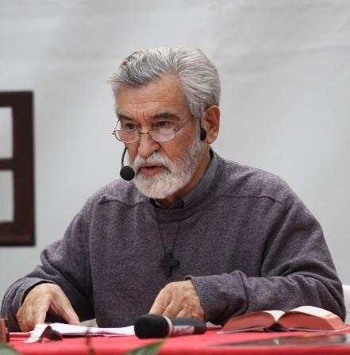

Par Nicolas Baguelin
12 mars 2008
Nicolas Baguelin st un catholique pratiquant, spécialisé dans les études rabbiniques.
Comme tous les enfants français catholiques de ma génération, j'ai fait du catéchisme, et on y apprenait et on y apprend encore: la Palestine, pays de Jésus [1]. Toute mon enfance, je me rappelle ces sermons mentionnant « Jésus sur les routes de Palestine », « la Palestine occupée par les Romains ». Autant d'expressions d'apparence banale qui, pour fausses qu'elles soient d'un point de vue historique, contribuent finalement à créer des réflexes théologiques et politiques sur tout ce qui touche au conflit dit « israélo-palestinien ».
Lorsque je me suis rendu pour la première fois en Israël, je faisais peu de cas de la politique et, pour être très franc, je n'y connaissais rien. Connaissant trois mots d'hébreu, je cherchais à communiquer dans la langue du Tanakh [Écritures] avec n'importe qui, y compris des Arabes. Une fois, une partie du groupe de pèlerins, dont j'étais, s'est perdue du côté du Mont des Béatitudes et mon hébreu m'a permis de dialoguer avec un paysan arabe catholique qui nous a remis sur le droit chemin. A Jéricho, les bédouins me regardaient de travers lorsque passant près de leur tente je leur lançais un « layla tov » (bonne nuit) très sonore, et je ne comprenais pas bien pourquoi.
Je peux maintenant analyser qu'il existait en moi une espèce d'aimantation pour le souk arabe que tout pèlerin recherche inconsciemment comme la marque de l'authenticité du pays de Jésus. Je ne me rendais pas compte à l'époque que nous visitions essentiellement des zones d'habitation arabe et non juive: Bethléem, Jérusalem-est, Nazareth. Je me suis surpris à prendre récemment un itinéraire d'un « pèlerinage en Terre Sainte » classique, et presqu'aucun lieu visité ne se trouve en zone juive.
Cette constatation est très étonnante: aurions-nous inconsciemment en tête réalisé l'association suivante: Jésus habitait un pays arabe? Nos livres de caté sont parsemés de Jésus et d'apôtres portant djellabah, turbans et keffieh, et nos cartes de la Bible de Jérusalem indiquent « Palestine de l'Ancien Testament ».
Un jour, mon vénérable père était en discussion avec une collègue de travail libanaise à propos du conflit israélo- arabe et cette dernière était persuadée que le mot « Palestine » figurait dans la Bible, et plus particulièrement dans l’Évangile.
Mais on ne trouve ce nom de « Palestine » dans aucun livre de la Bible. Une petite recherche biblique sur l’expression « Terre d’Israël » (en hébreu Eretz Israel) est très instructive car c’est en effet par cette expression que la Terre donnée par Dieu au Peuple juif est appelée.
La première occurrence de l'expression est dans le livre d'Ezéchiel: « Je vous donnerai la terre d'Israël » (Ez 11, 17, puis Ez 12, 19; 25,3; 25,6; 38,18). Pour ce qui est du nouveau Testament, on trouve deux passages intéressants dans l'évangile selon Matthieu:
« Lève-toi, prends le petit enfant et sa mère, et va dans la Terre d'Israël, car ceux qui en voulaient à la vie du petit enfant sont morts. Joseph se leva, prit le petit enfant et sa mère, et alla dans la Terre d'Israël. » (Mt 2,20-21). Cette expression est souvent traduite par « pays d'Israël », mais en grec "gen" [accusatif du mot Gè] signifie bien « terre » et il s'agit donc clairement d'un calque de l'expression hébraïque « eretz israel ».
Pour ce qui est des sources rabbiniques, « eretz israel » est une expression fort commune puisque sur le moteur de recherche http://hebrew-treasures.huji.ac.il/ on en trouve quelque 1536 occurrences dans des manuscrits allant du premier siècle à l'époque médiévale.
Il y aurait lieu d'exposer en détails quelle théologie de la Terre d'Israël les rabbins ont développée. Mais, n'est-il pas suffisant, pour des Chrétiens, de remarquer que cette expression existe déjà dans l’Évangile? Et ce, pour désigner ce que nous appelons improprement « Palestine ». Rien de plus naturel d'ailleurs puisque le mot Palestine est forgé en 131, par les Romains, après la seconde révolte juive, celle de Bar Kokhba.
A l'occasion, ils avaient aussi changé Jérusalem en Aelia Capitolina. Motif: effacer ces références aux Juifs rétifs qui avaient nécessité l'emploi de douze légions, soit près de la moitié de l'armée romaine! Une célèbre pièce de monnaie frappée pour l'occasion mentionne « Judea Capta », prise de la Judée. Preuve, s'il en fût, que le terme Palestine n'était pas encore né.
Il est intéressant de comprendre aussi ce qu'il y a traditionnellement derrière le mot « Israël ».
A l'origine, il désigne le patriarche Jacob dont Dieu a changé le nom en Israël après une nuit de combat contre l'Ange: « Dieu combat », ou bien « qui combat avec Dieu ». Puis, ce terme désigne par extension tous les Fils de l'Alliance définitivement scellée au Sinaï par Moïse. Ainsi, lorsque Théodore Herzl a théorisé le concept moderne d'un État pour les Juifs sur leur terre ancestrale, il a appelé cet État « l’État pour les Juifs » et non comme on l'entend souvent « l’État juif ».
Comme l'analyse Emmanuel Halperin dans une conférence très intéressante sur la déclaration d'indépendance de l'État d'Israël (je recommande fortement), le nom complet de l’État des Juifs est « État d'Israël », ce qui se traduit en français par « État des Juifs ». Il est fort dommage que la rétrospective d'Emmanuel Halperin ne remonte pas au- delà d'Herzl car il met en valeur les hésitations des fondateurs modernes de l’État d'Israël pour donner un nom à cet État: Heber, Sion, etc., alors qu'en regardant en arrière, jusqu'aux rabbins auteurs du Talmud, et même jusqu'à l'évangéliste Matthieu qui écrit pour un milieu juif, on se rend compte qu'il existe ce concept de Terre d'Israël, qui n'est pas un concept avant tout politique, mais national et religieux.
Dans ces conditions, on peut se demander pourquoi nous, Chrétiens, persistons à employer ce terme de « Palestine » bien qu'il soit parfois remplacé par le terme, prétendument plus neutre, de « Terre Sainte ». En effet, la Bible, et particulièrement l’Évangile, parlent de cette Terre comme de la Terre d'Israël, de façon très naturelle, tout comme la Syrie, la Perse, Égypte et l'Arabie sont appelées par leur nom.
L'expression « Terre d'Israël » tout comme le terme moderne « État d'Israël » raccourci souvent en « Israël » et malheureusement déformé trop souvent en « État juif » ou « État hébreu » renvoie finalement à la notion théologique d'Israël que nous avons brièvement expliquée.
Il serait de bon ton que les Chrétiens s'interrogent précisément sur cette filiation théologique de l’État d'Israël moderne avec les lieux et les personnes que nous côtoyons dans la Bible. Pour ma part, j'analyse les réflexes d'emploi des expressions « Palestine » et « Terre Sainte » comme des résidus d'une théologie antijuive qui reposait sur le principe suivant: pour démontrer la Vérité du Christianisme, il fallait se servir du Judaïsme comme d'un repoussoir et le présenter comme imparfait et caduc.
Dans ce contexte, l'idée des Juifs chassés loin de leur terre et dispersés en diaspora était interprétée comme une conséquence de leur refus de Jésus (ce qui est historiquement anachronique puisque la diaspora date d'avant Jésus).
L'idée de diaspora et de destruction du Temple comme châtiment divin faisait en plus écho à la littérature prophétique qui présente les choses de cette façon. Ainsi, la théologie chrétienne antijuive a tout naturellement adopté l'attitude d'effacement de toute trace juive de cette terre.
A l'heure où nombre de ceux qui s'approprient l'héritage et l'identité du concept romain de Palestine, en se définissant comme Palestiniens, semblent plus préoccupés par l'effacement symbolique et physique de la présence juive sur cette terre que par la création d'un État, cette considération sur l'emploi du mot Palestine en milieu chrétien devrait nous poser question.
En effet, elle ne désigne ni la réalité du temps de Jésus, ni la réalité actuelle (il n'existe pas de Palestine actuellement, seulement des personnes s'identifiant comme Palestiniens) et au regard de l'histoire du mot comme de l'histoire présente, cette réalité ne semble pas souhaitable d'un point de vue chrétien tant qu'elle consiste à être une concurrence voire une substitution de la réalité théologique d'Israël présent sur Terre.
Il y a quelques dimanches de cela, au début du Carême, nous avons lu l'évangile de la Samaritaine dans Jean au chapitre 4: « Alors Il quitta la Judée, et retourna en Galilée. Comme il fallait qu'il passe par la Samarie… » Qui prétendrait nous faire préférer le terme de « Cisjordanie »? La réalité spirituelle et historique est pourtant là. N'est- ce pas dans le désert de Judée que les manuscrits du même nom (comprenant ceux de Qumran) ont été trouvés? Ils n'étaient pas écrits en arabe palestinien, mais en hébreu et araméen principalement; et d'ailleurs, les habitants juifs actuels de la Judée et de la Samarie sont pour la plupart capables de les lire comme s'ils lisaient leur journal!
Décidément, ce conflit est beaucoup plus une question de symbolisme religieux avec un enjeu spirituel mondial qu'un conflit territorial envenimé par une poignée d'extrémistes « des deux bords » (j'adore l'expression). En tout état de cause, j'espère que cet exposé de l'histoire des mots, qui est le fruit de ma recherche patiente vous aidera à entendre l’Évangile différemment et à mesurer le poids spirituel des mots que nous employons.
© Nicolas Baguelin
Le P. Michel Remaud ajoute (https://catholiquehebraique.wordpress.com/2008/03/12/la-palestine-pays- de-jesus/#comment-41) le 14 mars 2008 après avoir lu le texte de Nicolas Baguelin:
Sur l'usage du terme de Palestine, je suis d'accord, à quelques nuances près: on trouve quand même huit fois dans la Bible le mot Peleshet, pour désigner le pays des Philistins, c'est-à-dire, en gros, l'actuelle bande de Gaza et la plaine côtière.
La citation de Matthieu est importante, non seulement comme témoignage de l'emploi de l'expression « Terre d'Israël », mais aussi théologiquement. Elle répond, à l'évidence, à l'expression de « terre d'Égypte » en Ex 4,19-20.
J'ai sous la main la Bible de Crampon dans une édition de 1939 et comportant huit cartes géographiques, dont trois de la « Palestine »: « Palestine (géographie physique) », « Palestine avec les divisions des 12 Tribus » (sic!) et « La Palestine au temps du Christ ». Lorsqu'on parlait alors de la Palestine, même à une époque beaucoup plus récente, le mot était politiquement neutre et beaucoup ne savaient même pas pourquoi le pays s'appelait comme ça; en tous cas, on n'y mettait pas ce qu'y mettait [l'empereur Hadrien. Aujourd'hui encore, on trouve dans des publications scientifiques des expressions comme « targums palestiniens » et même « talmud palestinien ». Difficile d'aller fouiller dans l'inconscient des usagers de ces formules, mais il est évident que ces expressions sont désormais piégées, puisque « Palestine » est inséparable de « Palestinien », avec toutes les harmoniques de ce terme.
Le problème, c'est que l'expression biblique de « Terre d'Israël », beaucoup plus juste à tous points de vue, est également politiquement piégée. Dira-t-on que Ramallah ou Naplouse sont en Terre d'Israël? C'est certainement vrai du point de vue des prophètes, mais l'usage de cette expression aujourd'hui serait politiquement explosif. Finalement, l'expression de « Terre sainte », bien qu'elle ne soit pas rigoureuse, est encore ce qui recouvre le moins mal la zone géographique en question.
Elle présente au moins l'avantage de dépolitiser la question. En revanche, je ne vois pas pourquoi on hésiterait à parler de Judée et de Samarie, termes aussi neutres politiquement que ceux de Galilée ou de Néguev. Cela dit, je pense qu'il est important de dénoncer l'anachronisme d'expressions comme « la Palestine au temps de Jésus », et d'expliquer pourquoi
Par Michel Remaud
Il y a sûrement de nombreuses manières de commenter la formule biblique qui a été donnée comme titre à notre session: « De Sion sort la Tora ». Je m’en tiendrai à quelques réflexions personnelles sur ce sujet.
Ces mots sont extraits d’un passage d’Isaïe qu’il faut d’abord citer intégralement:
« Il arrivera dans la suite des temps que la montagne de la maison du Seigneur sera établie en tête des montagnes et s’élèvera au-dessus des collines. Alors toutes les nations afflueront vers elle, alors viendront des peuples nombreux qui diront: “Venez, montons à la montagne du Seigneur, à la maison du Dieu de Jacob, qu’il nous enseigne ses voies et que nous suivions ses sentiers.” Car de Sion vient la Loi et de Jérusalem la parole du Seigneur. Il jugera entre les nations, il sera l’arbitre de peuples nombreux. Ils briseront leurs épées pour en faire des socs et leurs lances pour en faire des serpes. On ne lèvera plus l’épée nation contre nation, on n’apprendra plus à faire la guerre ». Isaïe (2,2-4).
On trouve un parallèle à ce texte dans Michée (4,1-3), avec quelques variantes. On ignore lequel des deux a copié l’autre. Certains exégètes pensent que l’un et l’autre ont recopié une source commune dont l’auteur nous est inconnu. Ce point est finalement peu important pour notre sujet.
Je ferai d’abord une première lecture de ce passage en m’en tenant aux données bibliques, midrashiques à l’occasion, avant de reprendre l’un ou l’autre point dans une perspective d’actualité.
I
Il arrivera be-aharit ha-yamim. Comment traduire? « À la fin des temps »? « Dans la suite des jours »? En tous cas: dans l’avenir. Ce texte annonce trois mouvements: de bas en haut; de l’extérieur vers Jérusalem; de Jérusalem vers l’extérieur.
De bas en haut.
On ne peut comprendre le verset qu’en se référant à la situation géographique de Jérusalem: le mont du Temple est la moins haute de toutes les collines.
Que ce soit de ce qui est aujourd’hui le site de la citadelle dite « de David », du mont Scopus, du mont des Oliviers, de la colline du mauvais conseil, où se trouve aujourd’hui le siège de la délégation de l’O.N.U., on domine Jérusalem. Il est classique de préparer une visite de Jérusalem en faisant le tour de la ville par les collines. C’est une situation que l’on peut interpréter de deux manières. D’un point de vue militaire, c’est une situation aveugle, ce qui oblige à poster des guetteurs sur les collines environnantes. On peut aussi y voir une image de la protection spirituelle dont bénéficie Jérusalem, comme le fait le Psaume 125,2 : « Jérusalem, les montagnes l’entourent; [ainsi] le Seigneur entoure Son Peuple ».
Le prophète imagine donc un bouleversement radical du relief, puisqu’il prédit que le mont du Temple sera élevé plus haut que le mont Scopus! La hardiesse de l’image met en évidence le caractère eschatologique de la vision.
De l’extérieur vers Jérusalem.
Relevons dans ce passage la présence de plusieurs expressions qui semblent synonymes: la montagne de la maison du Seigneur, la montagne du Seigneur, la maison du Dieu de Jacob, Sion, Jérusalem. Il y aurait là matière à des commentaires dans lesquels je n’entrerai pas. Dans la prière des Dix-huit bénédictions, par exemple, la formule « qui construit Jérusalem » se réfère en réalité à la construction du Temple.
« Vers elle afflueront tous les peuples ». Le verbe naharu évoque naturellement le courant d’un fleuve. Si la montagne du Temple est élevée au-dessus de toutes les autres, ce sera un flux ascendant!
On retrouve ici les perspectives eschatologiques d’autres prophètes, en particulier de Zacharie, annonçant que toutes les nations viendront célébrer Succot à Jérusalem (Zacharie 14,16). On peut penser aussi aux derniers versets d’Isaïe (66,18-23). Les nations montent à Jérusalem pour y ramener les exilés.
De Jérusalem vers l’extérieur.
Ce qui monte à Jérusalem, ce sont les nations. Ce qui en sort, d’après Isaïe, c’est la Tora. Ici, je voudrais m’arrêter sur deux points.
1. Avant de sortir de Jérusalem, la Tora a été donnée au Sinaï. La Tora vient-elle du Sinaï ou de Sion? On s’est
demandé dans la Tradition comment concilier ces deux données. Un midrash dit qu’en créant le monde, Dieu a cassé un morceau du mont Sion pour en faire le Sinaï. Il y a donc un rapport étroit entre Sinaï et Sion. Je ne peux que l’évoquer rapidement.
Selon une tradition ancienne, transmise notamment par la Mekhilta de-Rabbi Ishmael et par les targums, la Tora du Sinaï avait été proposée à tous les peuples, qui n’en avaient pas voulu. Chacune des nations, en entendant décliner le décalogue, y avait trouvé un prétexte pour ne pas l’accepter. Rome, désignée à mots couverts par l’appellation conventionnelle d’Édom, avait achoppé sur « Tu ne tueras pas ». Comment Rome pourrait-elle être Rome sans faire la guerre? Et ainsi de suite pour toutes les nations.
Finalement, Israël avait accepté sans chercher à savoir d’abord à quoi il s’engageait. C’est l’interprétation traditionnelle du verset de l’Exode (24,7) : « Nous ferons et nous entendrons ». Israël s’est engagé (« nous ferons ») avant de savoir à quoi il s‘engageait (« nous entendrons »).
Le midrash insiste sur le fait que la Tora a été offerte dans un désert, en un lieu qui n’appartient à personne — sur terrain neutre en quelque sorte. En droit, elle est offerte à toutes les nations.
À la fin des temps, c’est de Sion que sortira la Tora pour les nations. Il n’est pas dit qu’à la fin des temps, les nations seront convoquées de nouveau au pied du Sinaï. Même si elle reste offerte à toutes les nations, on ne peut pas faire abstraction du fait qu’elle a été acceptée par Israël et que c’est désormais de Sion qu’on peut la recevoir, et par l’intermédiaire d’Israël. La Tora est désormais indissociable du Peuple qui l’a accueillie.
2. Jusque-là, Jérusalem aura été le point de convergence de flux descendants. Ce qui m’oblige à évoquer la question
du besoin d’eau à Jérusalem.
Quand David a pris Jérusalem, la source de Gihon pouvait sans doute suffire pour les besoins en eau de la population. Avec le développement de la ville, la source de Gihon devient insuffisante. Non pas seulement pour les besoins domestiques, mais aussi pour le nettoyage du Temple après les sacrifices et pour les ablutions rituelles, qui demandaient une quantité d’eau considérable à cause de l’afflux des pèlerins.
Au début du XXe siècle, on a trouvé sur l’Ophel, en contre-bas du Temple, une inscription (rédigée en grec, ce qui prouve qu’on parlait aussi le grec à Jérusalem) qui devait figurer sur le mur d’une synagogue et ainsi rédigée: « Théodote, fils de Vénétos le prêtre et archisynagogos (chef de synagogue), fils d’archisynagogos et petit-fils d’archisynagogos, a construit cette synagogue pour la lecture de la Loi et l’étude des commandements, et comme hôtel avec chambres et installations d’eau pour subvenir aux besoins des pèlerins de l’étranger … »
Cette situation a conduit à aller chercher de l’eau de plus en plus loin. Entre Bethléem et Hébron, les « vasques de Salomon » (évidemment postérieures à Salomon) permettaient de recueillir l’eau des collines de Judée et de l’amener jusqu’à Jérusalem par un système très élaboré de canalisations. On comprend aussi l’importance de la prière pour la pluie après Succot. On arrive à la fin de l’été et le nettoyage du Temple après les sacrifices, très nombreux pendant les 7 jours de la fête (Nombres 29,13-34), exige de grandes quantités d’eau, en plus de ce qui est requis pour les ablutions rituelles.
Jérusalem est toujours exposée au risque de pénurie d’eau. Or, dans la vision des prophètes, l’eau sort de Jérusalem. Dans le chapitre 47 d’Ézéchiel, l’eau sort de dessous le seuil du Temple et le Cédron devient un fleuve d’eau vive. Zacharie (14,8) annonce: « En ce jour-là, des eaux vives sortiront de Jérusalem, moitié vers la mer orientale, moitié vers la mer occidentale » (la Mer Morte et la Méditerranée). Dans la même ligne, le Psaume 87,7 conclut: « En toi sont toutes mes sources ».
Dans la vision eschatologique des prophètes, Jérusalem devient, selon la formule d’un de mes confrères aussi passionnés de la Bible que de la géographie de la terre d’Israël, « le château d’eau de l’humanité ».
Il est évident que les « sources » dont il est question ici ne sont pas purement matérielles et hydrauliques. Selon une très ancienne interprétation, l’eau est le symbole de la Tora. On connaît la scène des eaux de Mara telle qu’elle est racontée dans le livre de l’Exode. Trois jours après le passage de la mer Rouge, on ne trouve pas d’eau dans le désert. On trouve finalement une source, mais son eau amère est imbuvable, jusqu’à ce que Moïse y jette un morceau de bois et qu’elle devienne potable (Exode 15,22-25). Un midrash ancien, la Mekhilta de-Rabbi Ismael, commente cette scène en disant qu’Israël ne peut pas rester trois jours consécutifs sans eau, c’est-à-dire sans la Tora, et rattache à ce récit l’usage de lire la Tora, non seulement le shabbat, mais aussi le lundi et le jeudi.
Les prophètes annoncent donc que la Tora jaillira de Jérusalem pour abreuver les nations.
II
Quelle peut être la signification de tout cela pour aujourd’hui?
Toute cette vision est présentée comme eschatologique. N’oublions pas le dernier verset du passage: « Ils briseront leurs épées pour en faire des socs et leurs lances pour en faire des serpes. On ne lèvera plus l’épée nation contre nation, on n’apprendra plus à faire la guerre ».Est-ce à dire que tout cela ne se réalisera que lorsque le mont du Temple sera plus haut que le mont Scopus et qu’on ne verra plus un seul fusil sur la terre?
Mais cela ne peut pas relever uniquement d’un avenir renvoyé purement et simplement à la fin des temps. Nous disons que nous sommes déjà dans les temps eschatologiques. Les Chrétiens en font un point de foi: l’épître aux Hébreux commence en disant que ces temps sont les derniers (Hébreux 1,2). Du côté juif, on peut entendre quelque chose d’analogue, puisqu’une opinion relativement commune est que les temps messianiques sont inaugurés par le retour d’une partie du Peuple sur sa terre.
On a donc le droit de se demander ce qu’il en est aujourd’hui de ces perspectives de fin des temps. Dans cette optique, je reprends les deux points que j’ai évoqués en commençant: les nations montent à Jérusalem; de Sion sort la Tora.
1. Les nations montent à Jérusalem.
On constate qu’elles y sont déjà montées plusieurs fois depuis Nabuchodonosor!
Ces montées ont été tantôt militaires (les Romains, les Perses, les Arabes, les croisés, les Arabes encore, les Mamelouks, les Turcs, les Britanniques, les Jordaniens); tantôt religieuses (les pèlerinages), tantôt militaires et religieuses tout à la fois (le calife Omar, les croisés).
Je résume sans doute des événements à propos desquels les historiens pourraient apporter beaucoup de précisions et de nuances. Je m’en tiendrai à une seule remarque: quand les nations montent à Jérusalem, c’est pour se l’approprier. Mais peut-on mettre la main sur un don gratuit?
On pourrait dire que les pèlerins chrétiens qui viennent aujourd’hui à Jérusalem n’y viennent pas en conquérants comme les croisés. Mais on peut remarquer qu’il y a eu une certaine mainmise chrétienne sur Jérusalem à partir du milieu du XIXe siècle. Que l’on pense au nombre d’établissements chrétiens (anglais, français, allemands …) qui ont fleuri sur cette terre à partir du milieu du XIXe siècle. Cette montée des nations vers Jérusalem était à la fois politique et religieuse.
Je dis volontiers que le sionisme juif a été précédé d’une trentaine d’années par une sorte de « sionisme chrétien ».
Et l’on sait que le sionisme juif a été considéré sans bienveillance par un monde chrétien qui se considérait plus ou moins comme chez lui en terre sainte.
2. De Sion sort la Tora.
Je dois évoquer ici le récit de la Pentecôte dans les Actes des Apôtres.
On ne peut pas nier qu’il y ait dans la Pentecôte une certaine réalisation de la prophétie d’Isaïe. Il se trouve alors à Jérusalem des gens « de toutes les nations qui sont sous le ciel ». Le récit de Luc intègre de toute évidence des éléments des traditions sur le don de la Tora. Comme dans les midrashim, il est dit que chacun entend la Parole dans sa propre langue, que tout le Peuple voit le feu… Les commentaires sur le verset « Tout le Peuple voyait les voix » (Exode 20,18) disent en effet que la Parole s’était rendue visible sous la forme d’un feu.
C’est un fait objectif que la Tora s’est diffusée depuis Sion dans les nations à partir de la Pentecôte. On pourra évidemment dire que ce qui s’est diffusé, c’est l’Évangile. Mais on ne peut nier qu’il y a eu dans les nations une diffusion de la Révélation biblique depuis la Pentecôte.
Pour les Chrétiens, la Tora est sortie de Sion. En sort-elle au présent? et au futur? La phrase d’Isaïe qui est affichée sous nos yeux dit que la Tora sort et sortira (tetse) de Sion. Les pèlerins, surtout les catholiques, viennent voir les lieux d’où la Tora est sortie. Attendent-ils encore qu’elle en sorte?
Ce qui m’amène à une question délicate, mais que je crois essentielle: est-ce que Sion est seulement un lieu, ou un lieu habité?
Beaucoup de Chrétiens se satisfont des lieux et des sites archéologiques. Or, la Tora a été donnée à un Peuple, et il n’y aurait pas eu de Tora s’il n’y avait pas eu de Peuple pour l’accueillir et la mettre en pratique.
Pour Isaïe, les nations montent « à la montagne du Seigneur, à la Maison du Dieu de Jacob ».
Accepter la Révélation biblique, ce n’est pas seulement croire en Dieu, mais croire au Dieu de Jacob. La Révélation biblique fait corps avec l’Alliance. La Révélation n’est pas un simple « message ». Elle est l’âme d’un Peuple réel.
Très tôt, comme on sait, l’enseignement chrétien a dissocié la Révélation biblique du Peuple juif. Chez les plus anciens des Pères de l’Église, on dit qu’Israël a été dépossédé des Écritures, qui sont passées à l’Église. On s’est approprié l’identité d’Israël au lieu de penser la relation à Israël en termes de communion. On a procédé à un transfert d’élection: le Peuple élu était le Peuple chrétien.
C’est un fait dont les causes et les formes sont assez bien connues. Il est stérile de faire ici le procès de nos devanciers. Nous savons qu’il est toujours difficile, sinon impossible, de faire des procès historiques, puisqu’on juge des intentions des gens du passé en fonction des évolutions qui se sont produites après leur mort et en fonction de situations présentes qu’ils ne pouvaient pas prédire.
On ne peut pas non plus faire semblant d’ignorer pourquoi il ne peut pas y avoir de communion réciproque et symétrique entre le Peuple juif et l’Église, à moins de nier les éléments constitutifs du christianisme et donc de nier le christianisme lui-même. Du reste, les raisons pour lesquelles le judaïsme rabbinique ne s’est pas reconnu dans l’Évangile n’étaient pas futiles. On ne peut pas se satisfaire de positions théologiques simplistes. Là aussi, nous avons encore beaucoup à réfléchir et à travailler.
Mais il faut reconnaître que pour beaucoup de Chrétiens d’aujourd’hui, la Révélation biblique est encore et toujours dissociée du Peuple juif réel et contemporain.
J’ai parlé de dissociation entre le Peuple et la Révélation. Cette dissociation en a entraîné une autre: entre le Peuple et la Terre. C’est là un thème que l’on entend à longueur de pèlerinages: cette terre est la terre de la Révélation. On a pu lire il n’y a pas si longtemps des formules du genre: « Dieu a parlé à cette terre. » Qu’est-ce que cela veut dire? Dieu n’a pas parlé aux cailloux!
S’il a parlé, c’est bien parce qu’il y avait des oreilles pour l’entendre. Et si l’on dit que cette terre est la terre des patriarches et des prophètes, on ne peut pas éviter de se demander à quel peuple appartenaient les patriarches et les prophètes.
Pas plus tard que la semaine dernière, j’ai entendu chanter une traduction du « Magnificat » dans laquelle le verset 1,54, généralement traduit par « Il relève Israël son serviteur », était ainsi rendu: « Il prend soin de son peuple comme d’un fils ». Pour Marie, dans la bouche de qui Luc met ces paroles, de quel peuple pouvait-il s’agir, sinon de celui auquel elle appartenait? Tout ce passage (Luc 1,54-55) fait allusion à la promesse faite à Abraham (Genèse 15,16) et accomplie dans la sortie d’Égypte avec Moïse.
Pour éviter tout rapprochement avec l’Israël contemporain, on coupe le lien entre la Genèse et l’Exode. Je sais que je pénètre maintenant sur un terrain miné, et je ne voudrais pas polluer d’emblée l’atmosphère de notre session par des réflexions qui pourraient entraîner des débats polémiques, mais je voudrais au moins dire ceci: la Révélation biblique demeure et sera toujours indissociable du Peuple juif réel. La Révélation biblique n’est pas la préhistoire de l’Église.

Quand on fréquente le judaïsme, on constate que l’Évangile lui-même n’est pas pleinement compréhensible s’il n’est replongé dans son milieu d’origine, qui est la culture du Peuple juif. Vouloir isoler l’Évangile du Peuple où il a été prêché, c’est faire une véritable vivisection.
Ce que je vais dire sera sans doute surprenant pour beaucoup de Juifs, et peut-être aussi pour des protestants, et j’espère ne choquer personne en le disant, mais la plupart des catholiques ne lisent pas saint Paul et ne comprennent rien à la dialectique de nombreux passages de ses épîtres. Pourquoi? Si beaucoup de passages du Nouveau Testament sont pour eux incompréhensibles, et leur semblent sans intérêt, c’est parce qu’ils portent sur des questions qui ne pouvaient se poser qu’à l’intérieur du Peuple juif.
Je dois compléter cette affirmation par une réflexion qui me servira de conclusion: l‘importance pour les Chrétiens de la relation au judaïsme ne peut pas se limiter à ses aspects littéraires ou documentaires. On n’étudie pas le judaïsme comme on étudie l’archéologie, les langues orientales ou la numismatique. Sinon, on réduit cette relation à l’utilitaire, dans une perspective qui reste encore égocentrique, c’est-à-dire « christianocentrique ». On n’étudie pas le judaïsme pour mettre des notes en bas des pages des traductions de la Bible.
Je le disais tout à l’heure: la Révélation est indissociable de l’Alliance.
Accueillir la Révélation, ce n’est pas seulement lire de belles histoires, accueillir des informations sur Dieu et des conseils spirituels, mais entrer dans une « économie », pour reprendre une expression classique de la théologie, qui implique l’Alliance entre Dieu et un Peuple.
L’Alliance fait corps avec la Révélation. L’approfondissement du travail de connaissance mutuelle que nous avons entrepris impliquera nécessairement une prise en compte de la question: « Que signifie aujourd’hui pour les Chrétiens “monter à la Maison du Dieu de Jacob“ ?
Il ne s’agit pas seulement d’accueillir une Révélation sur Dieu, puisque le Dieu auquel nous croyons ne se révèle et ne nous est connu que comme le Dieu de Jacob. Le Dieu de la Révélation est indissociable de Jacob et de sa descendance.
Comment les païens peuvent-ils trouver leur place par rapport à l’Alliance irrévocable qui a été conclue entre le Dieu unique et un Peuple qu’Il s’est choisi, et qui garde envers et contre tout son identité?
Je terminerai par une parabole un peu familière, en espérant qu’elle ne choquera personne.
Quand on veut introduire un nouvel élément, même de dimensions modestes, dans une pièce qui est déjà meublée, on peut se demander où il y a encore de la place et dans quel coin on peut le mettre. On peut aussi être amené à refaire toute la disposition de la pièce pour que l’élément nouveau s’y intègre en respectant l’harmonie de l’ensemble. Transposons la parabole. Le numéro 4 de Nostra Ætate tient sur une feuille de format A4.
Mais si on veut lui donner sa place à l’intérieur d’une théologie qui a déjà organisé toutes ses synthèses, ses classements et ses rayonnages, on sera conduit inévitablement à déplacer beaucoup de choses pour que la relation de l’Église au Peuple dont elle est née n’apparaisse pas comme une simple annexe ou un corps étranger.
C’est dire que la théologie a encore du travail devant elle…
Michel Remaud
La Hublais, 18 juillet 2012
Texte de la conférence donnée par Michel Remaud, directeur de l’Institut Albert Decourtray à Jérusalem, lors de la session "Découvrir le Judaïsme" à La Hublais.